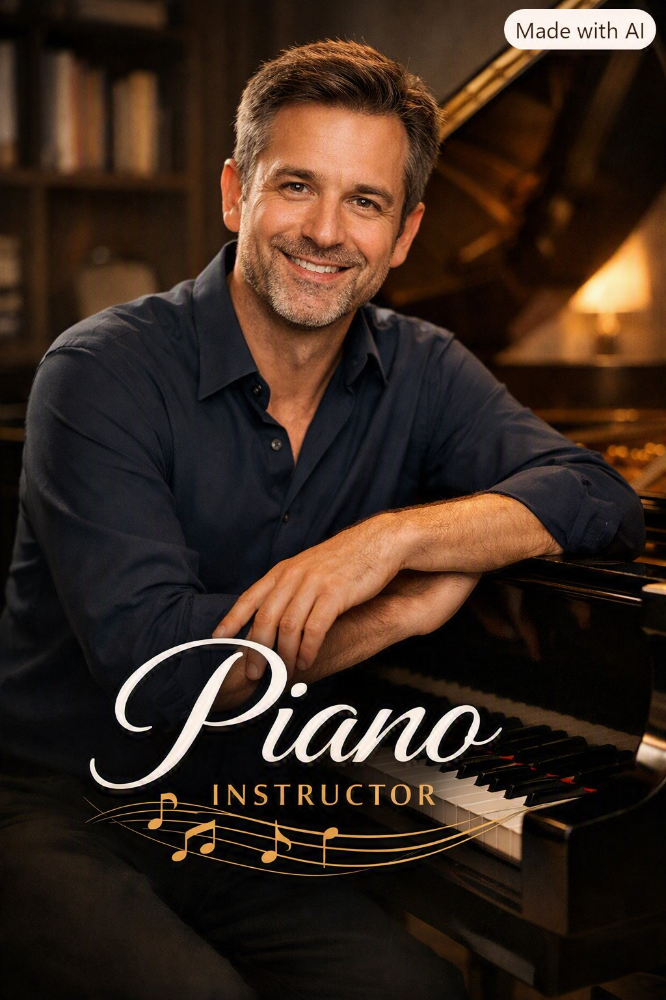
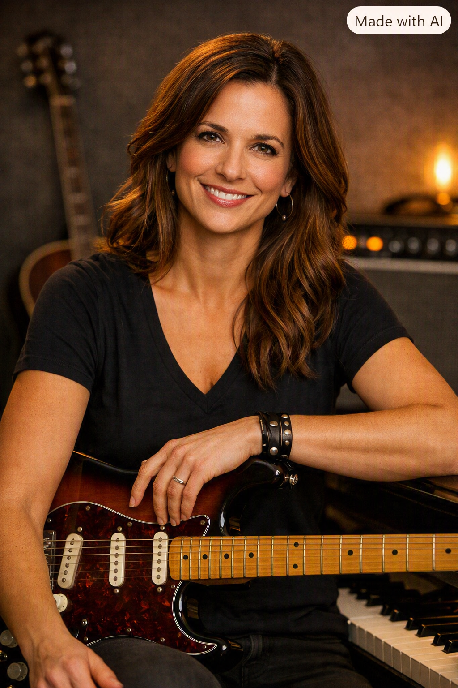
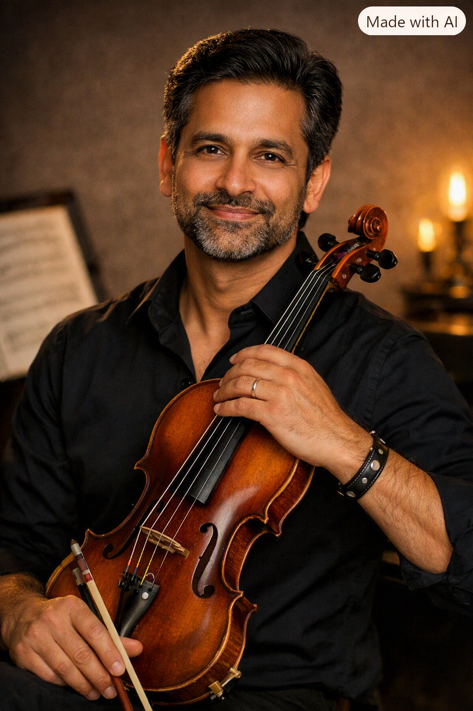
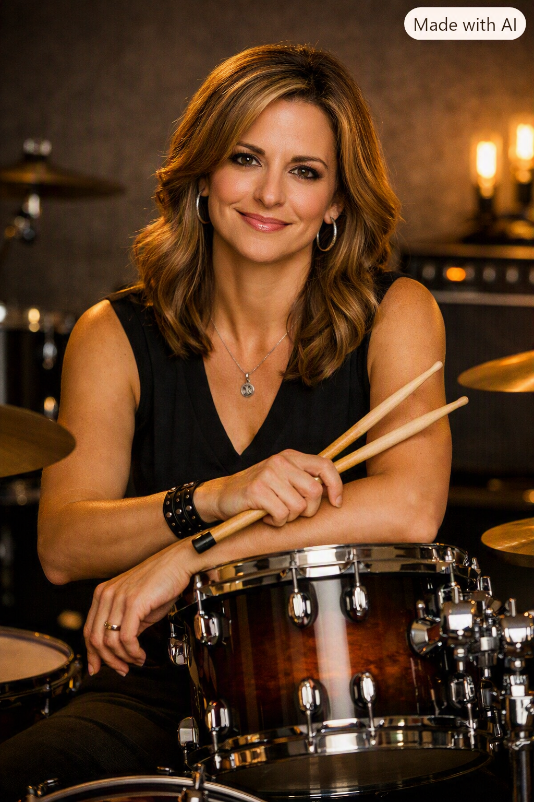
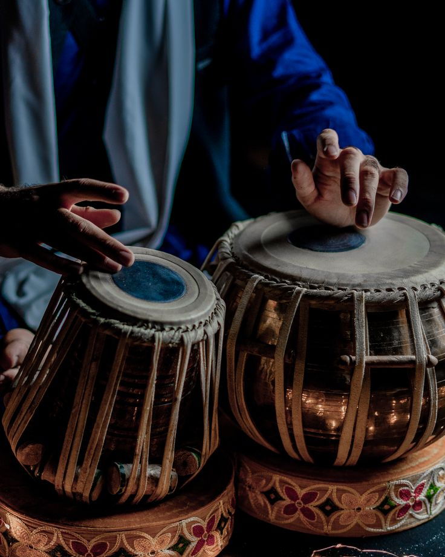
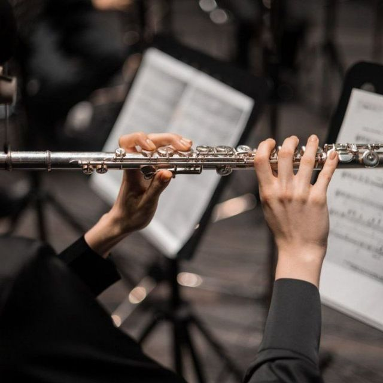
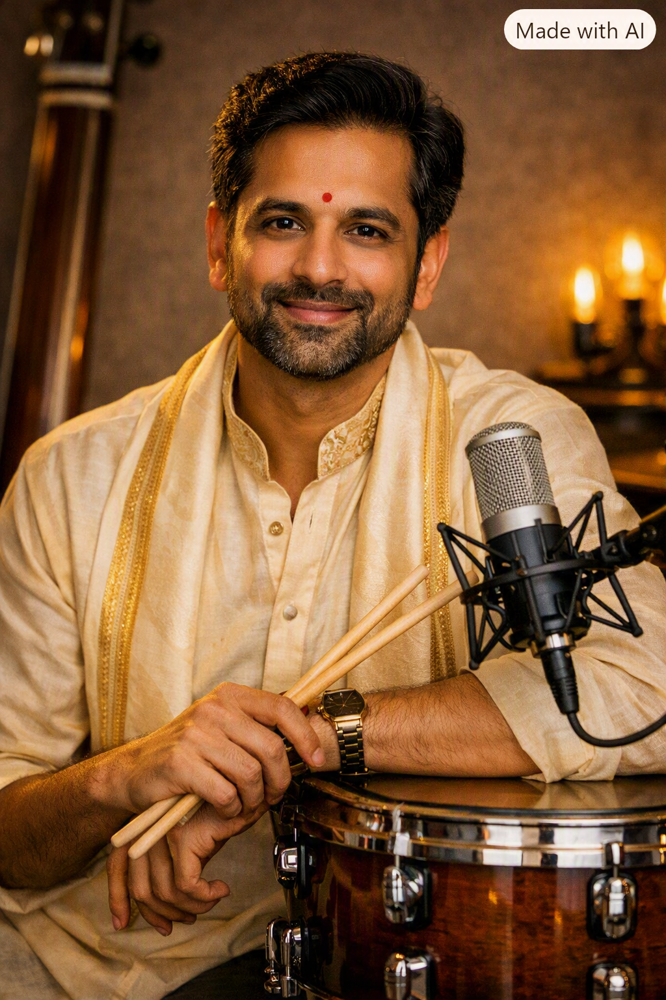

Meet Our Expert Faculty
Our experienced teachers are passionate musicians dedicated to helping every student develop confidence, creativity, and musical excellence.

Mr. David Thomas
Piano Instructor
15+ years of experience in Classical and Western Piano. Specializes in Trinity and ABRSM examinations.

Mrs. Emily Johnson
Guitar Instructor
Expert in Acoustic, Electric, Rock, Blues and Fingerstyle Guitar.

Mr. Arjun Rao
Violin Instructor
Professional Violinist with extensive experience in Carnatic and Western Classical Music.

Mrs. Sarah Williams
Drums Instructor
Specialist in Drum Set, Rhythm Training and Live Performance Techniques.

Mr. Ravi Kumar
Tabla Faculty
Award-winning Tabla artist with expertise in Hindustani Classical rhythm and percussion.

Mrs. Anjali Sharma
Flute Instructor
Experienced in Bamboo Flute, Classical Music and Stage Performance.

Mrs. Lakshmi Devi
Veena Instructor
Dedicated Carnatic Veena performer with over 18 years of teaching experience.

Mr. Rahul Krishna
Vocal Music Trainer
Teaches Carnatic, Light Music, Devotional Songs and Voice Training for beginners and professionals.
Why Learn From Our Faculty?
Certified Trainers
Internationally trained music professionals.
1000+ Students
Successfully trained students across all age groups.
Stage Experience
Regular concerts and live performance opportunities.